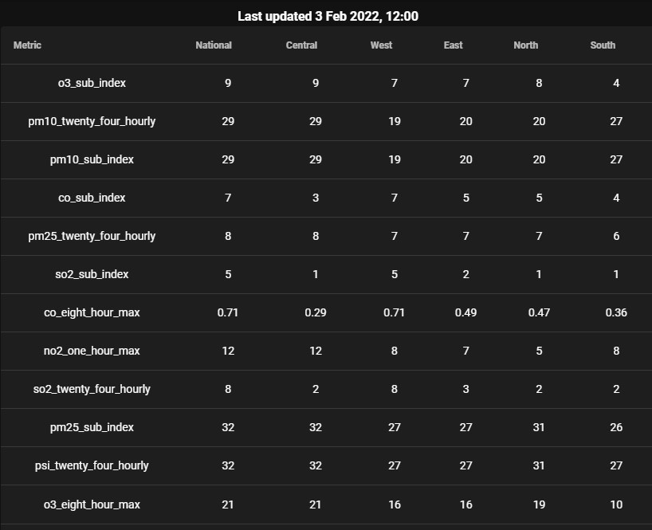

Assignment 1
Setup
To be completed by 22-2-2021(Thurs) 1200hrs
- This repo link will be of the format https://<username>.github.io/HASS-assignment1
- In the repo create a basic index.html file, and make it visible on GitHub repo pages (it's under the settings tab, under GitHub pages).
- You can put your CSS style tags, HTML and JS script code into one file, or organize them into files/directories.
The Problem
- Connect to the data.gov.sg PSI API and get the realtime dataset. It is detailed here.
- The URI for the API is: https://api.data.gov.sg/v1/environment/psi
- Print out all readings data into a table. There are 12 readings, from o3_sub_index to psi_twenty_four_hourly.
Extra Challenge
- Theme the layout of the table nicely. Tweak the CSS to your liking, or use some CSS framework!
- Print out the timestamp of when the data in the reading was updated.
Screenshot
More details
- This portion is not a design challenge.
- It is to show you can connect to an API, pull out and understand/read the JSON data, and list the table.
- Be sure you know what you are manipulating in the JSON schema. Console.log to inspect the JSON structure.
- You can use JQuery to append the HTML elements you need. Or just write in plain ES5/ES6 javascript. Or whatever JS framework you prefer.
More help please!
- If you can, write from scratch.
- But here's a basic starter template if you need one.
Questions?
Chi-Loong | V/R